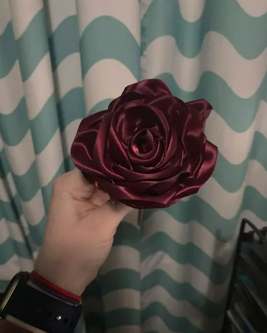

ribbon flowers are so pretty and fun to make. you can make all different types of flowers and put them together to make an arrangement!
since there are so many different types of flowers to make, I am not going to explain how to make them (watching a video is also easier because you have to fold and glue them a certain way) but the basic instructions are to make all your petals and then glue them onto a dowel rod. then you can put them into a vase and make a pretty arrangement! roses are my favorite to make but you can make lilies, hydrangeas, daffodils, and so many more!